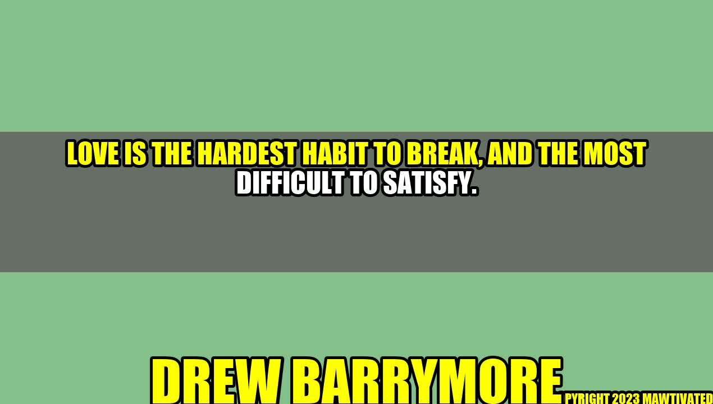

Love: The Hardest Habit to Break
Image Credits Akash Mittal
Inspiring Story: Drew Barrymore's Journey to Finding True Love
Love is a universal concept that everyone seeks to fulfill in their lifetime. It is an emotion that can bring both joy and pain, and it is the hardest habit to break. Actress Drew Barrymore is a great example of someone who has been on a journey to find true love. In her early life, she experienced fame and fortune, but it wasn't until she found love that she truly found happiness.
As a young actress, Drew Barrymore was exposed to the glitz and glamour of Hollywood at a young age. She went through a troubled childhood and turned to alcohol and drugs to cope with the stress of fame. However, as she got older and started to see the negative impact of this lifestyle, she decided to make a change.
In her 20s, Drew Barrymore got sober and started to focus on her career. She found success in the entertainment industry and even developed her own production company. However, despite her professional achievements, she still felt like something was missing.
It wasn't until she met her husband, Will Kopelman, that she realized what that missing piece was. They started dating in 2011 and were married the following year. Drew Barrymore has described their relationship as "effortless" and "natural," and she credits him with giving her a sense of stability and security that she never had before.
Their relationship has not been without its challenges, as all relationships are, but they have worked through them together. They now have two daughters, and Drew Barrymore has said that being a wife and mother has brought her more happiness than anything else she has ever experienced.
Why Love is the Most Difficult to Satisfy
Love is the most difficult habit to satisfy because it can mean different things to different people. Some people seek a passionate, intense love that is consumed by passion, while others want a steady, consistent love that is based on shared values and mutual respect.
Furthermore, love is not a one-size-fits-all solution. We all have different ways of expressing and receiving love, and it can be challenging to find a partner who matches our own unique love language.
Another reason why love is so difficult to satisfy is that our expectations for love are often influenced by outside sources, such as media and social norms. We may expect our partners to resemble the perfect couples we see in movies or on social media, which can lead to disappointment and frustration when our own relationships don't measure up.

"Change will not come if we wait for some other person or some other time. We are the ones we've been waiting for. We are the change that we seek." - Barrack Obama
However, despite these challenges, love is still something that we all strive for. It is a powerful emotion that can bring meaning and fulfillment to our lives, and it is something that we all deserve to experience.
Practical Tips for Finding and Sustaining Love
- Know Yourself: Before you can find someone to love, you need to understand yourself and what you want out of life. Take some time to reflect on your values, goals, and passions, and be honest with yourself about what kind of relationship you're looking for.
- Communicate Openly: Communication is key in any relationship. Be open and honest about your feelings, needs, and expectations, and make sure that you're actively listening to your partner as well.
- Show Love in Meaningful Ways: Everyone has a different love language, so it's important to communicate love in a way that your partner understands and appreciates. Whether it's through acts of service, words of affirmation, physical touch, or quality time, find out what makes your partner feel loved and make an effort to show it.
Conclusion
- Love is a universal concept that brings both joy and pain.
- Love is difficult to satisfy because it means different things to different people, and our expectations are often influenced by outside sources.
- To find and sustain love, it's important to know yourself, communicate openly, and show love in meaningful ways that resonate with your partner.
Curated by Team Akash.Mittal.Blog
Share on Twitter Share on LinkedIn